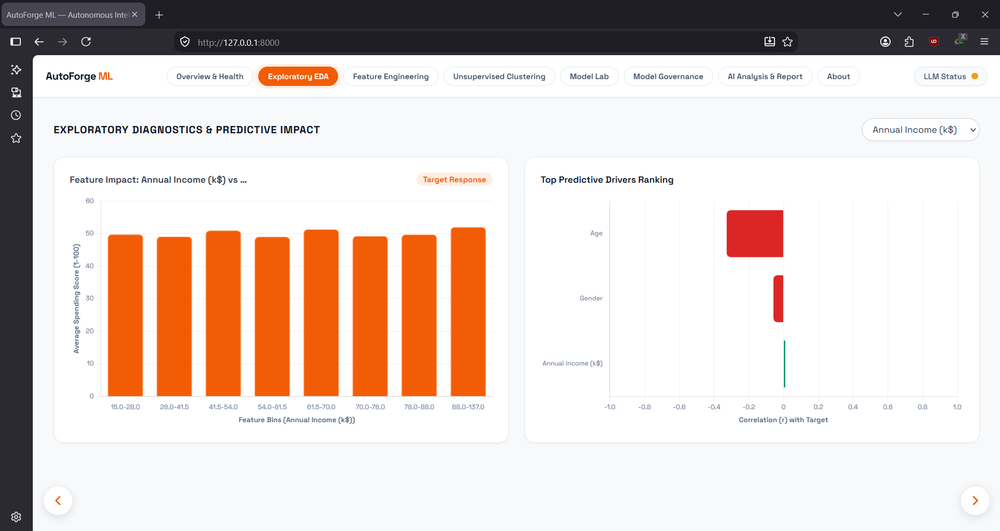
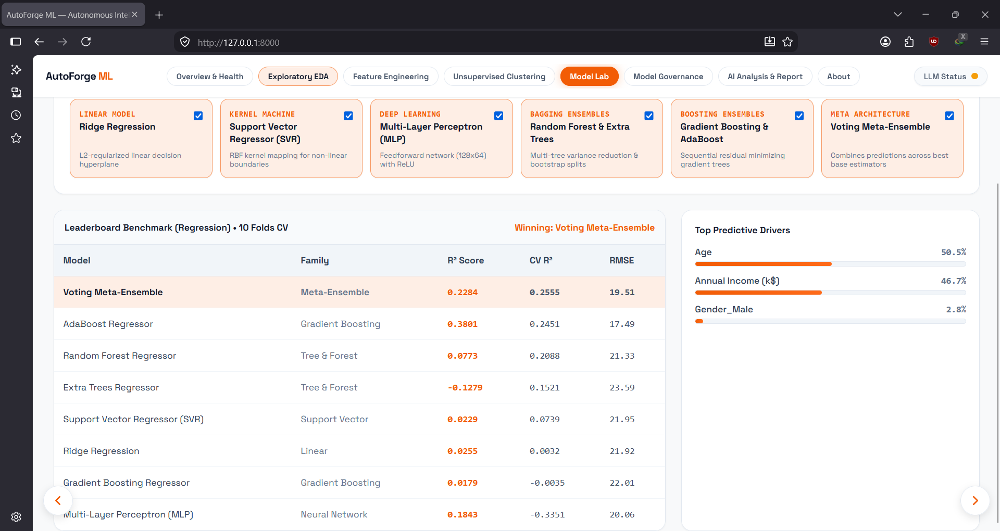
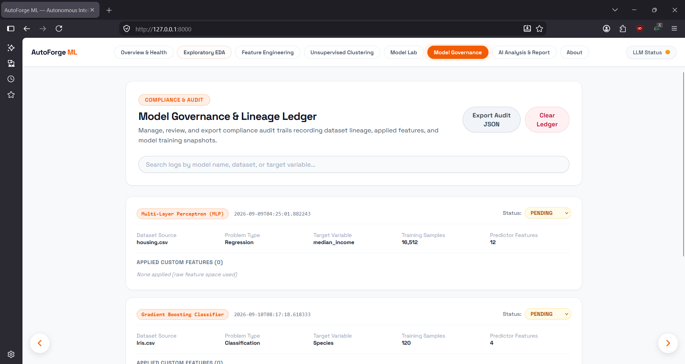

1. The Problem Statement: The Lifecycle Deficit
In typical applied machine learning coursework and prototype development, workflows are overwhelmingly algorithm-centric[cite: 1]: a prepared dataset is loaded, missing values are hastily imputed, a model is trained in a notebook, and a single validation metric is declared a success[cite: 1].
However, as formalized in modern enterprise MLOps frameworks, an isolated algorithm does not constitute an operational system[cite: 1]. Organizations face critical challenges: data privacy risks from sending proprietary records to cloud APIs, a pervasive lack of regulatory lineage tracking, and high model evaluation variance resulting from rigid, static splits[cite: 1].
AutoForge ML addresses this by establishing a sovereign, local-first workbench that unifies data hygiene, non-linear exploratory screening, mathematical feature generation, unsupervised clustering, multi-family AutoML benchmarking, and immutable governance tracking inside a single interface[cite: 1].
2. End-to-End System Architecture
AutoForge ML operates on a decoupled client-server architecture: a FastAPI Python backend manages mathematical operations, scikit-learn training pipelines, and automated reporting, while a React frontend provides real-time state visualization.
AutoForge ML Unified System Pipeline
Data entering the pipeline undergoes automatic hygiene: empty columns are dropped, missing numeric cells receive median imputation, and categorical columns receive mode substitution. High-cardinality surrogate keys and identifier columns are detected and excluded to eliminate data leakage[cite: 1].
3. Exploratory Diagnostics & Non-Linear Target Screening

Standard EDA tools frequently rely exclusively on linear Pearson correlation[cite: 1]. While effective for straight lines, correlation fails when evaluating non-monotonic curves or multi-class categorical features[cite: 1].
AutoForge ML combines linear ranking with dynamic aggregation and non-linear LOWESS curve screening. Continuous features are grouped across quantiles to expose parabolic or plateau relationships, while categorical attributes are evaluated against mean target responses across all classes without sample truncation.
4. Human-in-the-Loop Feature Synthesis
Feature engineering balances automated discovery with analytical transparency. Rather than operating as an uninterpretable black box, the system screens and recommends candidate transformations:
- Statistical Skew Relief: Detects right-skewed positive features and proposes log transforms (
np.log1p) to stabilize gradient descent and linear estimators. - Deterministic Interaction Ratios: Calculates pairwise ratios ($X_1 / X_2$) across continuous features to capture rate-of-change relationships.
- Additive Injection: When accepted, the engineered variable is appended to the DataFrame without overwriting original columns, and its exact mathematical lineage is recorded for governance.
5. Unsupervised Structure Discovery: Silhouette & 2D PCA
Before fitting predictive models, discovering natural groupings provides valuable structural perspective[cite: 1]. The system scales the feature matrix using StandardScaler, executes automated Silhouette score sweeps across cluster counts ($k = 2 \dots 8$), selects the optimal partition, and projects high-dimensional data onto a 2D Principal Component Analysis (PCA) plane for immediate visual verification.
6. The AutoML Arena & Dynamic Cross-Validation

AutoForge ML automatically routes tasks to regression or classification based on target cardinality. It benchmarks 8 distinct architectures simultaneously across multiple algorithm families:
- Linear Baseline: Ridge Regression / Logistic Regression with $L_2$ regularization.
- Kernel Machines: Support Vector Machines (SVR / SVC) using Radial Basis Function kernels.
- Neural Networks: Multi-Layer Perceptron (MLP) with $128 \times 64$ hidden layers, ReLU activation, and early stopping.
- Bagging Ensembles: Random Forest and Extra Trees with randomized split thresholds.
- Boosting Ensembles: Gradient Boosting and AdaBoost focusing sequentially on residual errors.
- Meta-Ensemble: A Voting Regressor/Classifier combining linear, bagging, and boosting outputs to cancel individual model biases.
Dynamic Cross-Validation Allocation
Rather than hardcoding a single static fold count, the pipeline adjusts cross-validation folds based on sample size:
• Small Datasets (< 1,000 rows): Up to 10 Folds (leaves 90% data for training, preventing starvation)
• Medium Datasets (1,000 – 50,000 rows): 5 Folds (optimal balance of accuracy and runtime)
• Large Datasets (> 50,000 rows): 3 Folds (efficient convergence on large sample sizes)
7. Model Governance & The Lineage Ledger

Chapters 7 and 10 of the enterprise MLOps framework emphasize that "An ML pipeline performs activities; an MLOps system also remembers and manages those activities"[cite: 1].
Every completed training cycle automatically appends an audit snapshot to an immutable ledger (model_governance_log.json). Each record captures:
- Lineage & Provenance: Exact dataset identifier, row count, target variable, and applied feature transformations.
- Reproducible State: Full algorithm hyperparameter dictionaries, random seeds, and holdout splits.
- Human-in-the-Loop Sign-Off: Models default to
PENDINGstatus and require human review and explicit status transition (APPROVED/REJECTED) before promotion.
8. Enterprise MLOps Alignment & Future Roadmap
Benchmarking AutoForge ML against the 12 chapters of the enterprise MLOps framework confirms how lifecycle discipline supersedes raw algorithmic complexity[cite: 1]:
Data Hygiene & Quality Checks (Ch. 3–5)
Automated detection of empty columns, schema validation, and median/mode imputation[cite: 1].
Automated Multi-Model Arena & Registry (Ch. 6–7)
Benchmarking 8 model families with cross-validation and serialized parameter logging[cite: 1].
Model Governance & Sign-Off (Ch. 10)
Immutable audit ledger tracking feature lineage and manual human approval states[cite: 1].
Post-Deployment Drift Monitoring (Ch. 9)
Integrating Kolmogorov-Smirnov (KS) tests to track distribution drift in production[cite: 1].
Key Architectural Takeaway
MLOps maturity is not measured by connecting dozens of cloud SaaS tools[cite: 1]. A local-first, containerized system with reliable data hygiene, transparent feature lineage, dynamic cross-validation, and auditable human governance establishes genuine operational reliability while maintaining total data sovereignty[cite: 1].